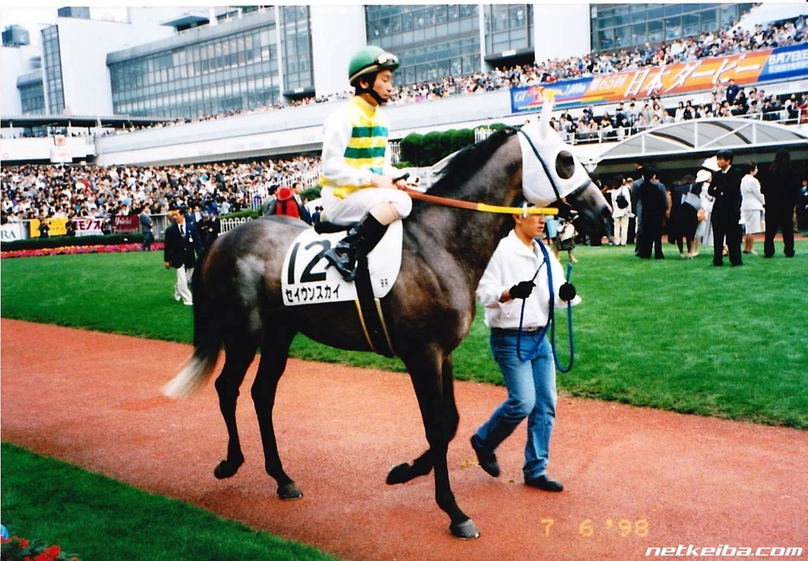

“When I looked at the electric scoreboard in Tokyo Dome, Seiun Sky was there, in Umamusume advertisement! 'You still live there...'I produced and had grown Seiun Sky, I watched all his races at the stands, made him a studhorse, and was present at his final moments.As Shigeyuki Nishiyama, I do nothing but being impressed.Probably, most of people who see Seiun Sky in Umamusume don't know his racing life. Nevertheless, who should I tell my appreciation to?”
―Shigeyuki Nishiyama, the owner

Seiun Sky
Seiun Sky was a racehorse that was active in the late 1990s. He was a representative frontrunner of the 1998-Classic generation. He ran with varied paces and tricked others. His major wins include the Satsuki Sho and Kikuka Sho of 1998, two of the Triple Crown in Japan.
Quick Trivia
- Both Seiun and Nishino are the crown name of same owner, Nishiyama Farm.
- He did not like tight spaces such as the race starting gate.
- His jockey Norihiro Yokoyama let him run with high speed at first, secondly he slowed, and at last he accelerated at the homestretch. Their phantasmagorical run gave them the Double Crown, especially Kikuka Sho.
- His latter owner Shigeyuki Nishiyama managed to succeed his pedigree. Nishino Daisy, the Nakayama Dai Shogai winner, is his and Nishino Flower's great-grandson.